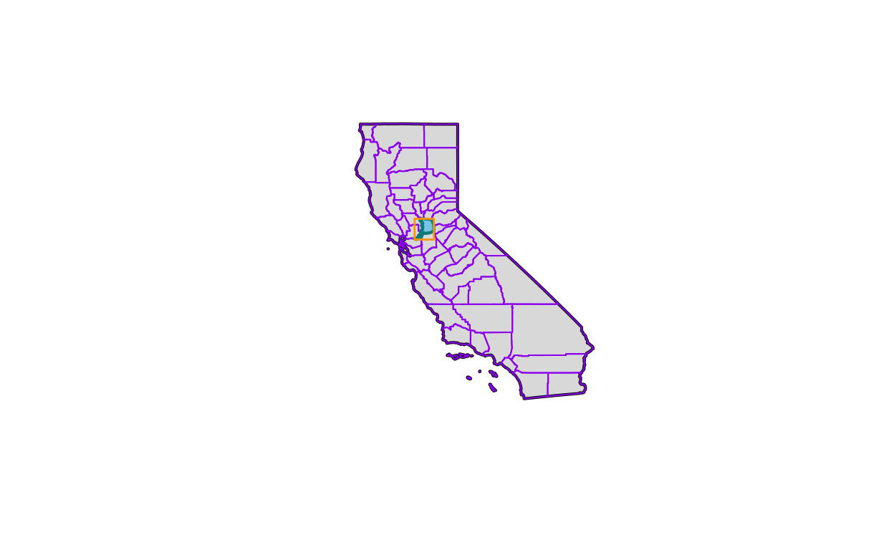
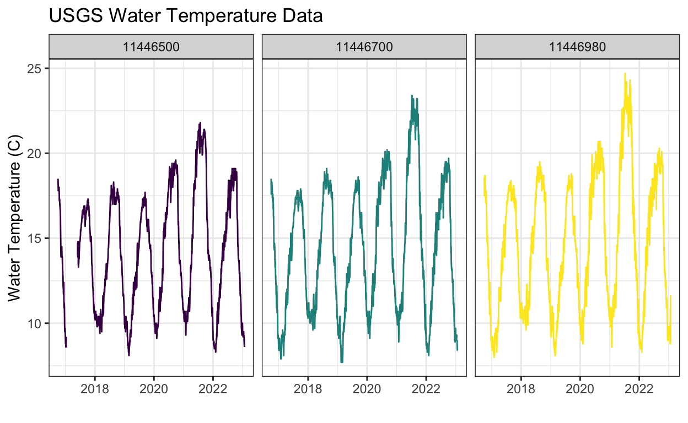

Learning objectives
- Learn to extend and use
{sf}for geospatial work - Understand the power of script-based geospatial/mapping
- Expand your geospatial skills in R!
Overview
The ability to work in one place or with one program from start to finish is powerful and more efficient than splitting your workflow across multiple tools. By sticking with one single framework or set of tools, we can reduce the mental workload necessary when switch between programs, staying organized in each, and dealing with import/export across multiple programs. Although different tools such as ESRI (or ArcPy extensions) are powerful, they require a paid license and typically use point-click user interfaces.
The advantage R has over these tools is that it is freely available, easily integrates with vast statistical/modeling toolboxes, has access to many spatial analysis and mapmaking tools, and allows us to work in a single place.
If we use a functional programming approach (described in the iteration module ) for spatial problems, R can be a very robust and powerful tool for analysis and spatial visualization of data! Furthermore, once analyses have been completed, we can re-use the scripts and functions for common spatial tasks (like making maps or exporting specific spatial files).
Common Geospatial Tasks
Common tasks in a GUI-based approach will always require the same number of point and clicks. With a script-based approach, its much easier to recycle previously written code, or to just change a variable and re-run the code. This efficiency is magnified immensely when it can be automated or iterated over the same task through time, or multiple data sets.
For example, some common tasks may include:
- Cropping data to an area of interest for different users
- Reproducing a map with updated data
- Integrating or spatial joining of datasets
- Reprojecting spatial data
Script-based analyses with {sf}
The {sf} package truly makes working with vector-based spatial data easy. We can use a pipeline that includes:
st_read(): read spatial data in (e.g., shapefiles)st_transform(): transform or reproject datast_buffer(): buffer around datast_union(): combine data into one layerst_intersection(): crop or intersect one data by anothergroup_split()&st_write()to split data by a column or attribute and write out
There are many more options that can be added or subtracted from these pieces, but at the core, we can use this very functional approach to provide data, make maps, conduct analysis, and so much more.
A Groundwater/Surfacewater Hydrology Example
Lets use an example where we read in some groundwater station data, spatially find the closest surface water stations, download some river data, and visualize!
The Packages
First well need a few packages weve not used yet. Please install these with install.packages() if you dont have them.
# GENERAL PACKAGES
library(here) # path management
library(tidyverse) # data wrangling & viz
library(purrr) # iteration
library(janitor) # name cleaning
library(glue) # pasting stuff together
library(here) # file paths
# SPATIAL PACKAGES
library(sf) # analysis tools
library(mapview) # interactive maps!
mapviewOptions(fgb = FALSE) # to save interactive maps
# devtools::install_github("UrbanInstitute/urbnmapr")
library(urbnmapr) # county & state boundaries
library(units) # for convert spatial and other units
library(dataRetrieval) # download USGS river data
library(tmap) # mapping
library(tmaptools) # mapping tools
Importing Spatial Data
Well leverage the ability to pull in many different data and stitch them all together through joins (spatial or common attributes). Each data component may be comprised of one or more layers, which ultimately we can use on a map.
Get State & County Data
First we need state and county boundaries. The {urbnmapr} package is excellent for this.
# get CA
ca <- urbnmapr::get_urbn_map(map="states", sf=TRUE) %>%
filter(state_abbv == "CA")
# warning is ok!
# get CA county boundary
ca_co <- urbnmapr::get_urbn_map(map = "counties", sf=TRUE) %>%
filter(state_abbv == "CA")
Lets also pull in a shapefile thats just Sacramento County. Well use this to crop/trim things down as we move forward. Note, well need to check the coordinate reference system and projection here, and make sure we are matching our spatial data.
# get just sacramento: here we read in a shapefile:
sac_co <- st_read(here("data/shp/sac/sac_county.shp"))
Reading layer `sac_county' from data source
`/Users/rapeek/Documents/github/r4wrds/intermediate/data/shp/sac/sac_county.shp'
using driver `ESRI Shapefile'
Simple feature collection with 1 feature and 9 fields
Geometry type: POLYGON
Dimension: XY
Bounding box: xmin: -13565710 ymin: 4582007 xmax: -13472670 ymax: 4683976
Projected CRS: WGS 84 / Pseudo-Mercator# check CRS
st_crs(sac_co)$epsg
[1] 3857# match with other data
sac_co <- st_transform(sac_co, st_crs(ca_co))
st_crs(sac_co) == st_crs(ca_co) # should be TRUE!
[1] TRUE# make a box around sacramento county
# (a grid with an n=1) for inset
sac_box <- st_make_grid(sac_co, n = 1)
And lets quickly visualize these pieces! Well use the base plot() functions here.
# make sure we have all the pieces with a quick test plot
plot(ca$geometry, col = alpha("gray", 0.5), border = "black", lwd=2)
plot(ca_co$geometry, add = T, border = "purple", col = NA)
plot(sac_co$geometry, add = T, border = "cyan4", col = "skyblue",alpha=0.4, lwd = 2)
plot(sac_box, add = T, border = "orange", col = NA, lwd = 1.4)

Iterate: Get Groundwater Stations
Lets practice our iteration skills. Well read in groundwater stations for 3 counties (El Dorado, Placer, and Sacramento), convert to {sf} objects, plot them, and then crop/select a subset of stations using spatial intersection.
Iterationremember {purrr}? Lets use it here!
# read the stations
gw_files <- list.files(path = here("data/gwl/county"),
full.names = TRUE, pattern = "*.csv")
# read all files into dataframes and combine with purrr
gw_df <- map_df(gw_files, ~read.csv(.x))
# the readr package will also do this same thing by default
# when passed a list of files with the same data types
gw_df <- read_csv(gw_files)
# now make "spatial" as sf objects
gw_df <- st_as_sf(gw_df, coords=c("LONGITUDE","LATITUDE"),
crs=4326, remove=FALSE) %>%
# and transform!
st_transform(., st_crs(ca_co))
# preview!
mapview(gw_df, zcol="COUNTY_NAME", layer.name="GW Stations") +
mapview(sac_co, legend=FALSE)
Hmmmlooks like there are some stations up near Lake Tahoe, and then all the stations that are outside of the Sacramento County boundary. Lets move on to do some cleaning/cropping/joining.
Filter, Select, & Spatial Joins
One of the more common spatial operations is filtering or clipping data based on a condition or another spatial layer.
Often to complete a geospatial operation, we need to use a projected coordinate reference system1 (not latitude/longitude), so we can specify things in units that are easier to understand (kilometers or miles) instead of arc degrees, and so that the calculations take place correctly. Note, here we have transformed our data to match up.
Filter
We could certainly leverage the data.frame aspect of {sf} and quickly filter down to the stations of interest using the COUNTY_NAME field.
You Try!
Use filter() to filter our gw_df dataframe to only stations that occur in Sacramento County. Then make a mapview() map and make the color of the dots correspond with the different WELL_USE categories. How many stations are there in each WELL_USE category?
Spatial Crop
Great! But what if we dont have the exact column we want, or any column at all? We may only have spatial data, and we want to trim/crop by other spatial data. Time for spatial operations.
First, we can use base [] to crop our data. Here we take the dataset we want to crop or clip (gw_sac) and crop by the Sacramento county polygon (sac_co). This is a type of spatial join, but note, we retain the same number of columns in the data.
Spatial Join
We can also use st_join() directly to filter for points that fall within a supplied polygon(s). In our case, we want groundwater stations (points) that fall within our selected counties (polygons).
Note, whats different between gw_df and gw_sac_join1?
We can also use an anti_join (the !) to find the stations that werent contained in our focal area. These operations can be helpful when exploring and understanding a dataset, to identify gaps, highlight specific areas, etc. st_intersects returns a vector of items based on whether the two spatial objects intersect (which can be defined differently using a multitude of spatial functions, see the sf help page).
# anti_join: find stations that aren't contained in Sacramento County
gw_sac_anti <- gw_df[!lengths(st_intersects(gw_df, sac_co)), ]
# plot
mapview(gw_sac_anti,
col.regions="maroon", cex=3,
layer.name="Anti-Join Sites") +
mapview(sac_co, alpha.regions=0,
color="black", lwd=3, legend=FALSE)
Writing Spatial Data Out
We may want to save these data and send to colleagues before we proceed with further analysis. As weve shown before2, functional programming allows us to split data and write it out for future use, or to share and distribute. Here we use a fairly simple example, but the concept can be expanded.
Lets use the {purrr} package to iterate over a lists and write each layer to a geopackage (a self contained spatial database). Geopackages are a great way to save vector-based spatial data, they can be read by ArcGIS and spatial software, and they are compact and self-contained (unlike shapefiles).
library(purrr)
library(glue)
library(janitor)
# first split our gw_df data by county:
gw_df_split <- gw_df %>%
split(.$COUNTY_NAME) %>% # split by cnty name
set_names(., make_clean_names(names(.))) # make a file friendly name
# now apply function to write out points by county
map2(gw_df_split, # list of points by county
names(gw_df_split), # list of names for layers
~st_write(.x,
dsn = here("data/county_gw_pts.gpkg"),
layer = glue("{.y}_gw_pts"),
delete_layer=TRUE, # to remove layer if it exists
quiet = TRUE) # suppress messages
)
$el_dorado
[1] 0
$placer
[1] 0
$sacramento
[1] 0To make sure this worked as intended, we can check what layers exist in the geopackage with the st_layers function.
Driver: GPKG
Available layers:
layer_name geometry_type features fields
1 el_dorado_gw_pts Point 45 14
2 placer_gw_pts Point 184 14
3 sacramento_gw_pts Point 494 14River Data: Find Nearest USGS Station
Weve demonstrated how to join data and crop data in R, but lets use some alternate options to download new data. Well focus on surface water here, and look at how we can download and map flowlines in R. Much of the USGS data network can be queried and downloaded in R. This may include data on water quality, river discharge, water temperature, spatial basins, and NHD flowlines. The {dataRetrieval} package is an excellent option for these operations.
Lets find a few groundwater stations to use. Here well grab one close to the American River and one close to the Cosumnes just for demonstration purposes, but this could be any X/Y point, or set of points you are interested in.
Use findNLDI
The findNLDI function allows us to pass a single spatial point as well as a few different parameters like search upstream or downstream, and what we want to find, and then return a list of items (see the help page for using the function here), leveraging the hydro-network linked data index (NLDI)3. Note, well need internet connectivity here for these functions to run successfully.
Lets look only at mainstem flowlines from our locations of interest, and return the nearest NWIS sites as well as the NHD flowlines (streamlines). Well use the map() function to pass a list of stations along (here only 2, but this is flexible, and in practice we can map over a much larger number of stations).
First, we want to look up the COMID or location identifier for the centroids.
library(dataRetrieval)
# Need to convert our locations of interest to WGS84
sac_loi <- sac_loi %>%
st_transform(4326)
# now we can go get flowline data!
us_nwis <- map(sac_loi$geometry,
~findNLDI(location = .x,
nav = c("UM"),
find = c("nwis", "flowlines"),
distance_km = 120)
)
Great, now we have a list of three or more things for each sf object we passed to findNLDI. In this case, we should have (for each location of interest we used):
origin: this is the segment that the original LOI was linked to based on the nearest distance algorithm the function used. Note, this is ansf LINESTRINGdata.frame.UM_nwissite: these are all the NWIS sites that were identified upstream of our origin point.UM_flowlines: these are the Upstream Mainstem (UM) flowlines from our origin point.
Lets play with these data and make some maps.
Extract the NLDI Info
There are a few options, and it depends on what your goal is. Here we show a few simple ways to pull these data out or collapse them. Remember, we can access things in lists with our [[]] too!
# we can split these data into separate data frame
# and add them as objects to the .Global environment.
# first add names based on our station IDs:
us_nwis <- set_names(us_nwis, nm=glue("id_{sac_loi$STN_ID}"))
# then split into separate dataframes
# us_nwis %>% list2env(.GlobalEnv)
# Or we can combine with map_df
us_flowlines <- map_df(us_nwis, ~rbind(.x$UM_flowlines))
us_nwissite <- map_df(us_nwis, ~rbind(.x$UM_nwissite))
mapview(sac_loi, col.region="purple", legend = TRUE,
cex=3, layer.name="GW LOI") +
mapview(us_nwissite, col.regions="orange",
legend = TRUE, layer.name="UM NWIS Sites") +
mapview(us_flowlines, color="steelblue", lwd=2,
layer.name="UM Flowlines", legend=FALSE)
Next, lets filter to NWIS USGS stations that have flow data (generally these have 8-digit identifiers instead of a longer code which can be more water quality parameters), and pull streamflow data for the nearest station.
# use the stringr package, part of tidyverse to trim characters
usgs_stations <- us_nwissite %>%
filter(stringr::str_count(identifier) < 14)
# double check?
mapview(sac_loi, col.region="purple", legend = TRUE,
cex=3, layer.name="GW LOI") +
mapview(us_nwissite, col.regions="orange", cex=2,
legend = TRUE, layer.name="UM NWIS Sites") +
mapview(usgs_stations, col.regions="cyan4",
legend = TRUE, layer.name="USGS Gages") +
mapview(us_flowlines, color="steelblue", lwd=2,
layer.name="UM Flowlines", legend=FALSE)
Snap to the Nearest Point
The final filter involves snapping our LOI points (n = 2) to the nearest USGS stations from the stations we filtered to above. We can then use these data to generate some analysis and exploratory plots.
Snapping spatial data can be tricky, mainly because decimal precision can cause problems. One solution is to add a slight buffer around points or lines to improve successful pairing.
For this example, well use st_nearest_feature(), which gives us an index of the nearest feature (row) between two sets of spatial data. In this case, we have two sets of points.
# get row index of nearest feature between points:
usgs_nearest_index <- st_nearest_feature(sac_loi, usgs_stations)
# now filter using the row index
usgs_stations_final <- usgs_stations[usgs_nearest_index, ]
# get vector of distances from each ISD station to nearest USGS station
dist_to_loi <- st_distance(sac_loi,
usgs_stations_final,
by_element = TRUE)
# use units package to convert units to miles or km
(dist_to_loi_mi <- units::set_units(dist_to_loi, miles))
Units: [miles]
[1] 13.696935 1.202355(dist_to_loi_km <- units::set_units(dist_to_loi, km))
Units: [km]
[1] 22.043080 1.935004# bind back to final dataset:
usgs_stations_final <- usgs_stations_final %>%
cbind(dist_to_loi_mi, dist_to_loi_km)
# now plot!
mapview(usgs_stations, cex = 2.75, col.regions = "gray",
layer.name = "USGS Stations") +
mapview(us_flowlines, legend = FALSE, color = "steelblue") +
mapview(usgs_stations_final, col.regions = "yellow",
layer.name = "Nearest USGS Station to LOI") +
mapview(sac_loi, col.regions="purple",
layer.name = "GW LOI")
Notice anything? How could we approach this differently so we pulled at least one gage per river instead of two in one river and none in the other?
Select Nearest by Distance
If we want to select more than a single point based on a threshold distance we can use a non-overlapping join and specify a distance. For many spatial operations, using a projected CRS is important because it generally provides a more accurate calculation since it is based on a flat surface and uses a linear grid. It has the additional advantage that we tend to process and understand information that is grid based more easily than curvilinear (degree-based), so a distance of 100 yards or 100 meters makes sense when compared with 0.001 degrees.
Therefore, first we transform our data into a projected CRS, then we do our join and distance calculations, then we can transform back to our lat/lon CRS.
usgs_stations <- st_transform(usgs_stations, 3310)
sac_loi <- st_transform(sac_loi, 3310)
# use a search within 15km to select stations
usgs_stations_15km <- st_join(sac_loi,
usgs_stations,
st_is_within_distance,
dist = 15000) %>%
st_drop_geometry() %>%
filter(!is.na(X)) %>% # can't have NA's
st_as_sf(coords = c("X","Y"), crs = 4326)
mapview(usgs_stations_15km, col.regions = "yellow") +
mapview(sac_loi, col.regions = "purple") +
mapview(us_flowlines, legend = FALSE, color = "steelblue")
Download USGS Data with NLDI
Now we have our stations of interest, and our climate data, lets download river flow and water temperature data with the {dataRetrieval} package.
# strip out the "USGS" from our identifier with "separate"
usgs_stations_15km <- usgs_stations_15km %>%
tidyr::separate(col = identifier, # the column we want to separate
into = c("usgs", "usgs_id"), # the 2 cols to create
remove = FALSE) %>% # keep the original column
select(-usgs) # drop this column
# see if there's daily discharge/wtemperature data available ("dv"):
dataRetrieval::whatNWISdata(siteNumber = usgs_stations_15km$usgs_id,
service = "dv",
parameterCd = c("00060", "00010"),
statCd = "00003")
agency_cd site_no
163 USGS 11446500
166 USGS 11446500
243 USGS 11446700
260 USGS 11446980
station_nm site_tp_cd
163 AMERICAN R A FAIR OAKS CA ST
166 AMERICAN R A FAIR OAKS CA ST
243 AMERICAN R A WILLIAM B POND PARK A CARMICHAEL CA ST
260 AMERICAN R BL WATT AVE BRDG NR CARMICHAEL CA ST
dec_lat_va dec_long_va coord_acy_cd dec_coord_datum_cd alt_va
163 38.63546 -121.2277 F NAD83 71.53
166 38.63546 -121.2277 F NAD83 71.53
243 38.59129 -121.3327 S NAD83 45.00
260 38.56713 -121.3883 S NAD83 25.00
alt_acy_va alt_datum_cd huc_cd data_type_cd parm_cd stat_cd
163 0.01 NGVD29 18020111 dv 00010 00003
166 0.01 NGVD29 18020111 dv 00060 00003
243 2.00 NGVD29 18020111 dv 00010 00003
260 2.50 NGVD29 18020111 dv 00010 00003
ts_id loc_web_ds medium_grp_cd parm_grp_cd srs_id access_cd
163 234322 NA wat <NA> 1645597 0
166 10977 NA wat <NA> 1645423 0
243 234323 NA wat <NA> 1645597 0
260 234324 NA wat <NA> 1645597 0
begin_date end_date count_nu
163 1971-07-20 2021-10-03 2554
166 1904-10-01 2021-10-03 42737
243 2016-10-01 2021-10-03 1098
260 2016-10-01 2021-10-03 1824# Extract Streamflow for identified sites
usgs_Q <- readNWISdv(usgs_stations_15km$usgs_id,
parameterCd = "00060",
startDate = "2016-10-01") %>%
renameNWISColumns()
# extract water temp
usgs_wTemp <- readNWISdv(usgs_stations_15km$usgs_id,
parameterCd = "00010",
startDate = "2016-10-01") %>%
renameNWISColumns()
Plot our USGS Data
Now we have the data, lets plot!
# Plot!
(hydro <- ggplot() +
geom_line(data = usgs_Q, aes(x = Date, y = Flow, col = site_no),
size = .5) +
scale_color_brewer(palette = "Set1") +
facet_wrap(~site_no, scales = "free_x") +
theme_classic() +
labs(title="USGS Discharge Data",
x="", y="Discharge (cfs)") +
theme(legend.position = "none"))

# Plot temp
(gg_temp <- ggplot() +
geom_path(data = usgs_wTemp,
aes(x = Date, y = Wtemp, col = site_no),
size = .5) +
facet_wrap(~site_no) +
theme_bw() +
labs(title="USGS Water Temperature Data",
x="", y="Water Temperature (C)") +
scale_color_viridis_d() +
theme(legend.position = "none"))

Challenge
In the plots above, we see the gaps in data are connected when using a line plot. Ideally, we would prefer to visualize these data with gaps (no line) where there is no data. To do this, we can leverage handy functions from the {tidyr} package: complete() and fill().
Click for Answers!
# load the package
library(tidyr)
# fill all unique combinations of Date in our data
usgs_wTemp2 <- usgs_wTemp %>%
group_by(site_no) %>% # group by our gages first
complete(Date = seq.Date(min(Date), max(Date), by="day")) %>%
# then list the cols we want to fill same value through whole dataset
fill(site_no, agency_cd)
# now regenerate plot!
# Plot temp
(gg_temp2 <- ggplot() +
geom_path(data = usgs_wTemp2,
aes(x = Date, y = Wtemp, col = site_no),
size = .5) +
facet_wrap(~site_no) +
theme_bw() +
labs(title="USGS Water Temperature Data",
x="", y="Water Temperature (C)") +
scale_color_viridis_d() +
theme(legend.position = "none"))

Make a Map with {tmap}
One final component that we havent covered much is how to create a publication ready-map. We can do this using the {ggplot2} package in conjunction with geom_sf(), or we can use some alternate packages which are built specifically to work with spatial data and use a similar code structure to {ggplot2}.
The {tmap} and {tmaptools} are excellent options to create a nice map that can be used in any report or publication. First, lets load the packages well use.
Now we build our layers using a similar structure as {ggplot2}.
final_tmap <-
# counties
tm_shape(sac_co) +
tm_polygons(border.col = "gray50", col = "gray50",
alpha = 0.1, border.alpha = 0.9, lwd = 0.5, lty = 1) +
# rivers
tm_shape(us_flowlines) +
tm_lines(col = "steelblue", lwd = 2) +
# points: LOI stations
tm_shape(sac_loi) +
tm_symbols(col = "orange3", border.col = "gray20",
shape = 21, size = 1.5, alpha = 1) +
tm_add_legend('symbol',shape = 21, col='orange3', border.col='black', size=1,
labels=c(' LOI')) +
# points usgs
tm_shape(usgs_stations_15km) +
tm_symbols(col = "cyan4", border.col = "gray20",
shape = 23, size = 0.5) +
tm_add_legend('symbol',shape = 23, col='cyan4', border.col='black', size=1,
labels=c(' USGS Stations')) +
# layout
tm_layout(
frame = FALSE,
legend.outside = FALSE, attr.outside = FALSE,
inner.margins = 0.01, outer.margins = (0.01),
legend.position = c(0.2,0.8)) +
tm_compass(type = "4star", position = c("right","bottom")) +
tm_scale_bar(position = c("right","bottom"))
final_tmap

To save this map, we use a similar function as the ggsave(), but in this case, its tmap::tmap_save().
Additional Resources
Weve covered a handful of packages and functions in this module, but many more exist that solve just about every spatial workflow task. All spatial and mapmaking operations are typically a websearch away, but we also recommend the following resources to dig deeper into the R spatial universe.
Previous module:
7. Paramaterized reports
A discussion on coordinate reference systems is a complex topic in and of itself, and for the purposes of this module, we summarize it as follows: A geographic CRS is round and based on angular units of degrees (lat/lng), whereas a projected CRS is flat and has linear units (meters or feet). Many functions in
{sf}that make calculations on data expect a projected CRS, and can return inaccurate results if an object in a geographic CRS is used. This is a fascinating topic with lots written about it! For more reading see this Esri blog, the Data Carpentry geospatial lesson, and the online Geocomputation with R book.See the iteration module for an example of iterating over a write function.
For more info on the NLDI: https://labs.waterdata.usgs.gov/about-nldi/index.html